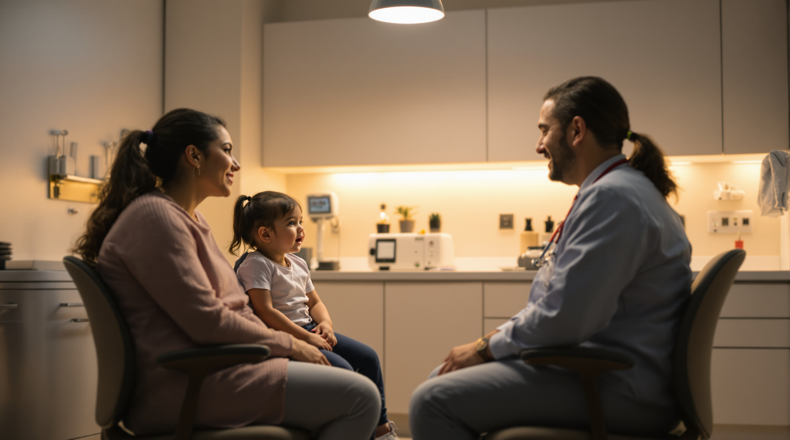
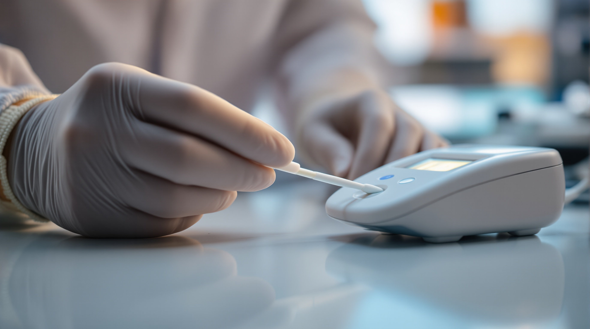
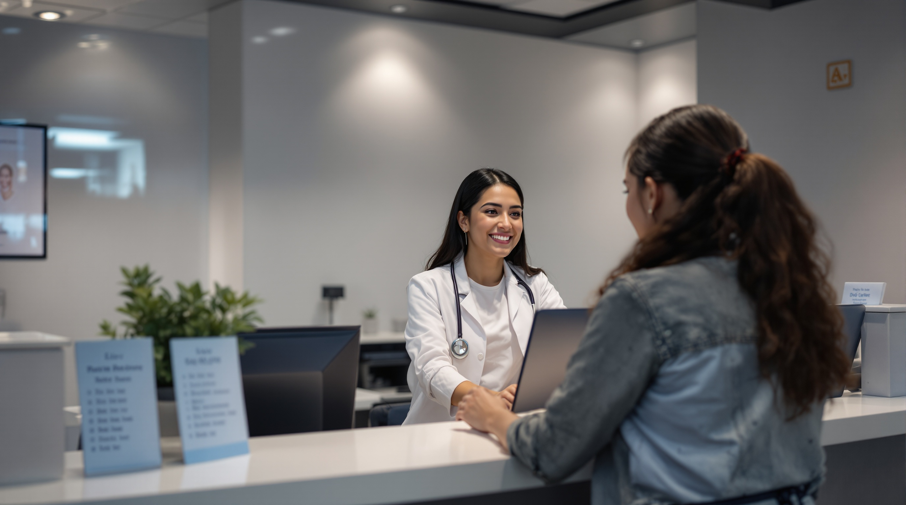
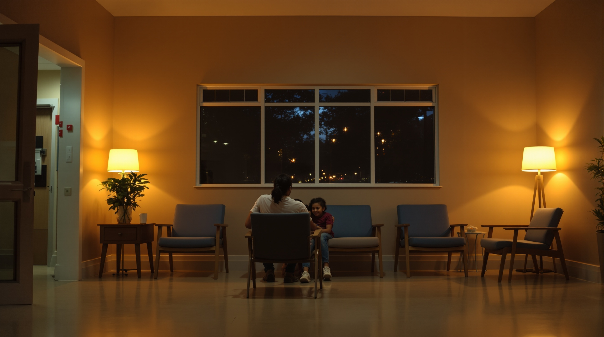

Walk-In Clinic Pharr TX — Open Nights & Weekends | Optimum Health & Wellness

When your child spikes a fever at 8 PM, or you wake up Sunday morning with a throat so sore you can barely swallow — you don't have time to wait. You need a walk-in clinic in Pharr, TX that's actually open, actually affordable, and actually there for you.
That's exactly what Optimum Health & Wellness Clinic is. We're located at 3912 N Jackson Rd, Pharr, TX 78577, and we built this clinic specifically for the families, workers, and communities across the Rio Grande Valley who need care outside the usual 9-to-5 window — without the crushing bill that follows an emergency room visit.
No appointment. No insurance required. Just walk in.
Why RGV Families Choose Our Walk-In Clinic in Pharr, TX
The Rio Grande Valley has some of the highest uninsured rates in the state of Texas. We know that. We're from here. And we know what it means to look at an ER bill and feel your stomach drop.
That's why Optimum Health operates as a fully transparent cash-pay clinic — you know the price before you're ever seen. No surprise bills. No hidden facility fees. No insurance claim that comes back to haunt you three months later.
Here's what you get when you walk through our doors:
- Same-day care for the conditions that can't wait until Monday
- Bilingual staff — hablamos español, y lo hacemos bien
- Flat, upfront pricing — a typical visit costs a fraction of an ER copay, let alone a full ER bill
- Evening and weekend hours — because illness doesn't work banker's hours
- Quick, thorough evaluations by experienced medical providers
We serve patients from Pharr, McAllen, Edinburg, Mission, San Juan, Alamo, Weslaco, and every corner of the RGV. If you're within driving distance of N Jackson Rd, you're close to care.

What We Treat — Common Conditions We See Every Night
Sick Kids & Adult Illnesses
Fevers, ear infections, sore throats, strep, coughs, sinus infections, nausea, vomiting, body aches — the everyday illnesses that hit hard and hit fast. We evaluate, diagnose, and treat so your family can start feeling better tonight.
Rapid Testing: Flu, COVID, and Strep
Results in minutes. No waiting days to find out what's wrong. If you've been feeling off and need answers fast, our rapid diagnostic tests give you clarity on the spot — and we'll have a treatment plan ready before you leave.
Wound Care & Minor Injuries
Cuts that need cleaning and closure, minor burns, abrasions, sprains, and injuries from everyday life. You don't need to sit in an ER for four hours for a laceration that needs a few stitches. Come to us — we handle it quickly, cleanly, and at a price that won't shock you.
Prescription Refills
Running out of a maintenance medication is a real emergency for millions of RGV residents. If you've been managing a known condition and need a refill without the weeks-long wait for a primary care appointment, our providers can help evaluate and prescribe on the spot.
Blood Pressure, Blood Sugar & Chronic Condition Check-Ins
High blood pressure and diabetes are incredibly common across Hidalgo County — and incredibly dangerous when unmanaged. We offer monitoring, medication support, and practical guidance for patients managing these conditions, especially those who may have gaps in their regular care.
UTIs, Respiratory Infections & More
Painful urination, burning, pressure — UTIs are miserable and they don't get better on their own. Same with bronchitis, upper respiratory infections, and other conditions that hit suddenly and need a provider's eye. We're here for all of it.

Skip the ER — Here's What That Actually Means for Your Wallet
Let's be direct about the numbers, because they matter.
A visit to the emergency room in South Texas for a non-life-threatening condition — a fever, a UTI, a sore throat — can easily cost $800 to $2,500 or more, even before you factor in lab fees, medications, or specialist referrals.
A visit to Optimum Health & Wellness Clinic? A fraction of that. Transparent. Upfront. Paid at the time of service so there's no mystery later.
For families without insurance in the RGV, that difference isn't abstract. It's the difference between getting care and going without. We refuse to let cost be the reason a family in Pharr, McAllen, or Edinburg skips treatment that could prevent something much more serious.

How Our Walk-In Process Works — Simple by Design
We designed this clinic for people who don't have time for complicated processes. Here's how a visit works:
1. Walk in — no appointment, no referral, no pre-authorization 2. Check in at the front desk — tell us what's going on, we'll get your information quickly 3. See a provider — a licensed medical professional evaluates you, answers your questions, and diagnoses the issue 4. Get treatment or a prescription — we'll send prescriptions to your pharmacy of choice, or treat you on-site depending on your needs 5. Pay a flat, known rate — cash, card, and other payment options accepted
That's it. Most visits are completed in under an hour. You came in feeling bad; you leave with a plan.
Serving the Entire Rio Grande Valley — From Pharr to the Valley's Edges
While we're based at 3912 N Jackson Rd, Pharr, TX 78577, our patients come from all over the RGV. We're conveniently located near major corridors that connect Pharr to McAllen, San Juan, Alamo, and beyond.
Whether you're a working parent in Mission who can't take time off during the day, a college student in Edinburg with no campus clinic access at night, or a senior in Weslaco whose pharmacy just flagged a prescription issue — we're your closest, most accessible option for real after-hours medical care.
And if you're unsure whether your situation is something we can handle, call us or just come in. We'll tell you honestly if you need a higher level of care — but nine times out of ten, we can help you right here, right now.
Bilingual Care — Porque Tu Idioma Importa
Healthcare in your language isn't a luxury. It's a necessity.
When you're sick, or you're worried about your child, you need to be able to explain exactly what's happening — and you need to understand exactly what the provider is telling you. At Optimum Health, our team is fully bilingual. You will be heard and understood, in English or Spanish, without hesitation.
This matters deeply to us. The RGV is a predominantly Spanish-speaking community, and every patient deserves care that reflects that reality.
Frequently Asked Questions
Do I need an appointment? No. Walk in anytime during our open hours. No appointment, no referral needed.
Do you accept insurance? We are a cash-pay clinic. We do not bill insurance, which is part of how we keep prices transparent and affordable. Many patients find our out-of-pocket prices are lower than their insurance copays.
What forms of payment do you accept? Cash, debit, and major credit cards.
What if I need labs or imaging? We can order labs and work with local diagnostic facilities to get you what you need. We'll guide you through the process.
Is this a real doctor? Yes. You will be seen by a licensed medical provider — not just a triage tech. Real evaluation, real diagnosis, real treatment.
Walk In Tonight — We're Ready for You
You've been waiting long enough. Whether it's a sick kid, a painful infection, a prescription you can't go without, or just something that feels wrong and won't go away — Optimum Health & Wellness Clinic is open, staffed, and ready.
📍 3912 N Jackson Rd, Pharr, TX 78577 Serving Pharr, McAllen, Edinburg, Mission, San Juan, Alamo, Weslaco & all of the Rio Grande Valley.
No appointment. No insurance needed. Walk in tonight.
Your health can't wait — and now, neither do you.
Ready to Be Seen? Here's Exactly What to Do Next.
Option 1 — Walk straight in: Drive to 3912 N Jackson Rd, Pharr, TX 78577. Pull into the parking lot, walk through our front doors, and check in at the front desk. No paperwork ahead of time, no appointment, no insurance card required. We'll take it from there.
Option 2 — Call us first: Have questions about your symptoms, our hours, or what a visit will cost? Call us directly at (956) 900-0000. Our staff will give you a straight answer — no runaround, no hold music maze. If we can help you, we'll tell you. If you need a higher level of care, we'll tell you that too.
Option 3 — Get directions now: → Click here to get directions to our Pharr clinic on Google Maps
We're open evenings and weekends — the hours when most clinics are already closed and the ER is your only other option. Don't pay an ER bill for a problem we can solve tonight at a fraction of the cost.
Walk in. Call ahead. Either way — we're here.
Optimum Health & Wellness Clinic
Walk in tonight — no appointment, no insurance needed.
Visit Optimum Health & Wellness Clinic